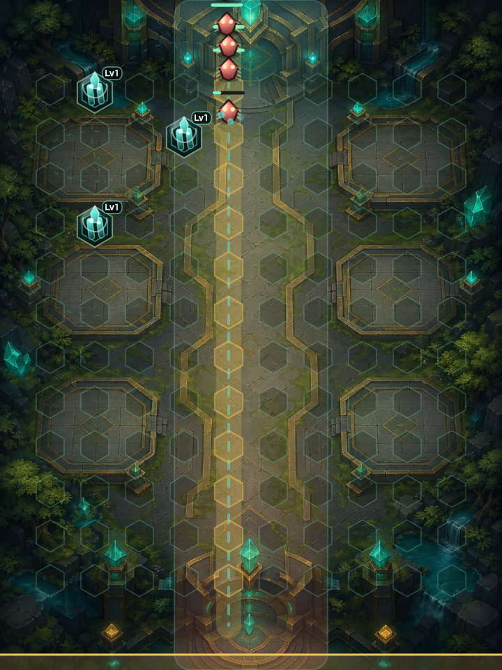

敵の進行ルートをタワーで変えながらクリスタルを守る無料ブラウザタワーディフェンスゲームです。
タワーディフェンスゲーム
敵の進行を読み、タワー配置と強化で拠点を守る防衛ゲームを掲載しています。
タワーディフェンスは、配置の工夫が結果につながりやすいジャンルです。短時間でも作戦を試せるゲームを遊べます。

敵の進行ルートをタワーで変えながらクリスタルを守る無料ブラウザタワーディフェンスゲームです。
目的や端末に合わせて、ほかの無料ブラウザゲーム入口も確認できます。